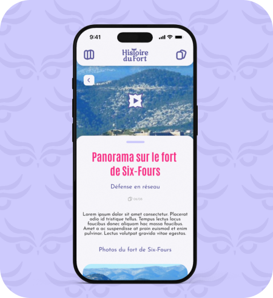
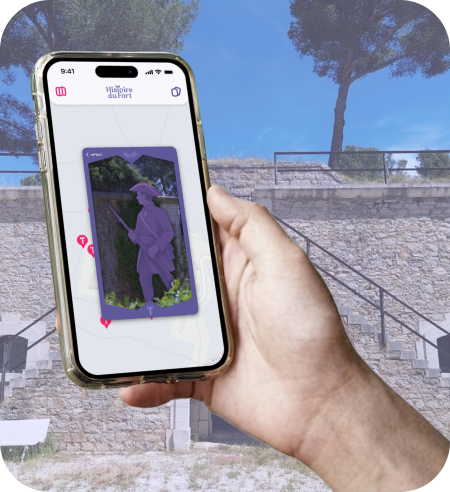
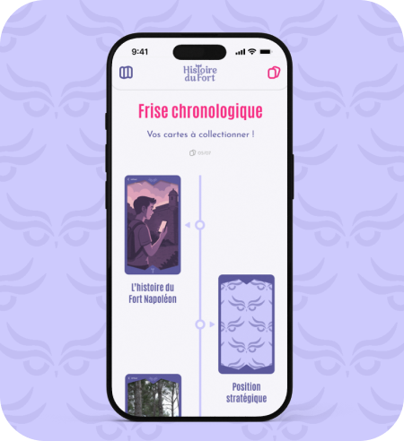

Production
L'expérience repose sur un système captivant de cartes à collectionner. Tout au long de la promenade sur le tour de ronde, les visiteurs utilisent la géolocalisation pour débloquer des cartes à chaque point d’intérêts, et obtenir des contenus multimédias exclusifs comme des vidéos historiques, des animations en motion design et des anecdotes inédites. Chaque carte enrichit la frise chronologique interactive, permettant de reconstituer leur visite du Fort Napoléon.
Direction artistique
Le projet adopte une identité visuelle forte, mêlant l'onirisme et l'aspect historique. Le logo, fusionnant un livre et une chouette (espèce protégée présente sur la colline du Caire), évoque les contes de notre enfance et les secrets que le visiteur est invité à déverrouiller.
Maquette interactive :
J'ai participé à l'élaboration de la maquette interractive, en créant une interface épurée et onirique, permettant de mettre en avant les contenus multimédia tout en accompagnant les visiteurs.



Productions audiovisuelles :
Enfin, j'ai également produits différents gif en motion design qui ont été intégrés dans l'application, ou dans des vidéos.
Puis, j'ai aussi monté la vidéo pour le point d'intéret "Les principes de l'architecture de Vauban".

 Mon rôle pour la gestion de projet :
Mon rôle pour la gestion de projet :
J'ai joué un rôle important pour la gestion de ce projet, en prenant en charge la coordination des étapes de conception et le suivi de la production. J'ai assuré la cohérence entre les attentes du département du Var et la solution technique proposée.
Analyse personnelle
En tant que groupe, nous avons travaillé de manière collaborative pour atteindre nos objectifs communs. Chacun a apporté ses compétences spécifiques, ce qui a permis de renforcer la qualité globale du projet.
Cependant, j'aurais aimé produire des vidéos de meilleures qualités, mais le temps et les ressources limitées ont été des contraintes.